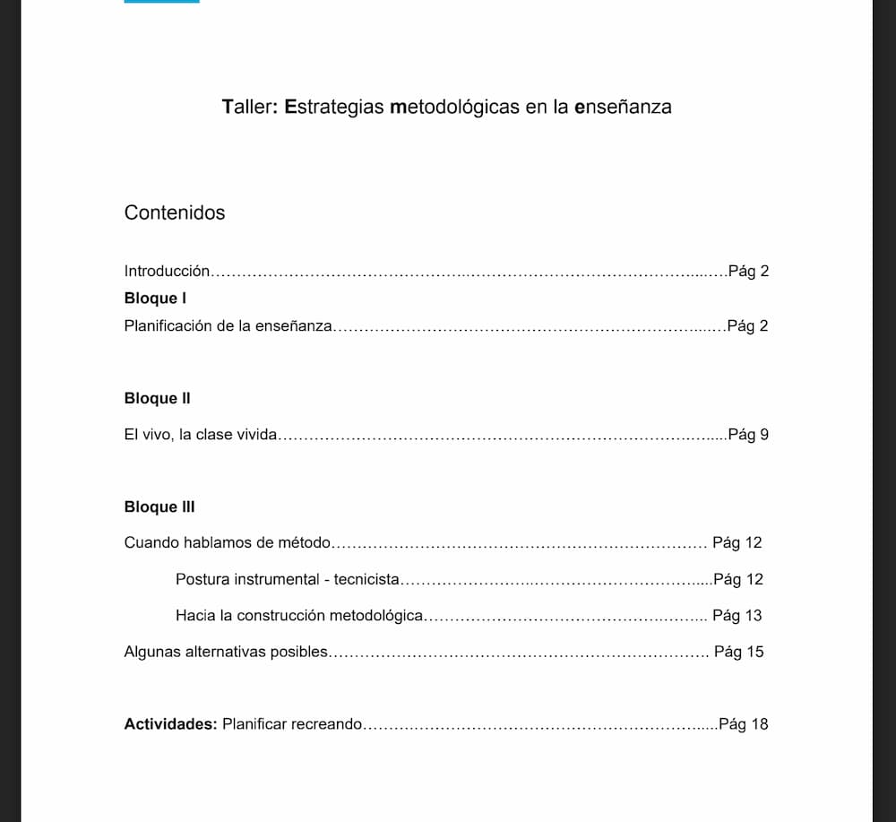
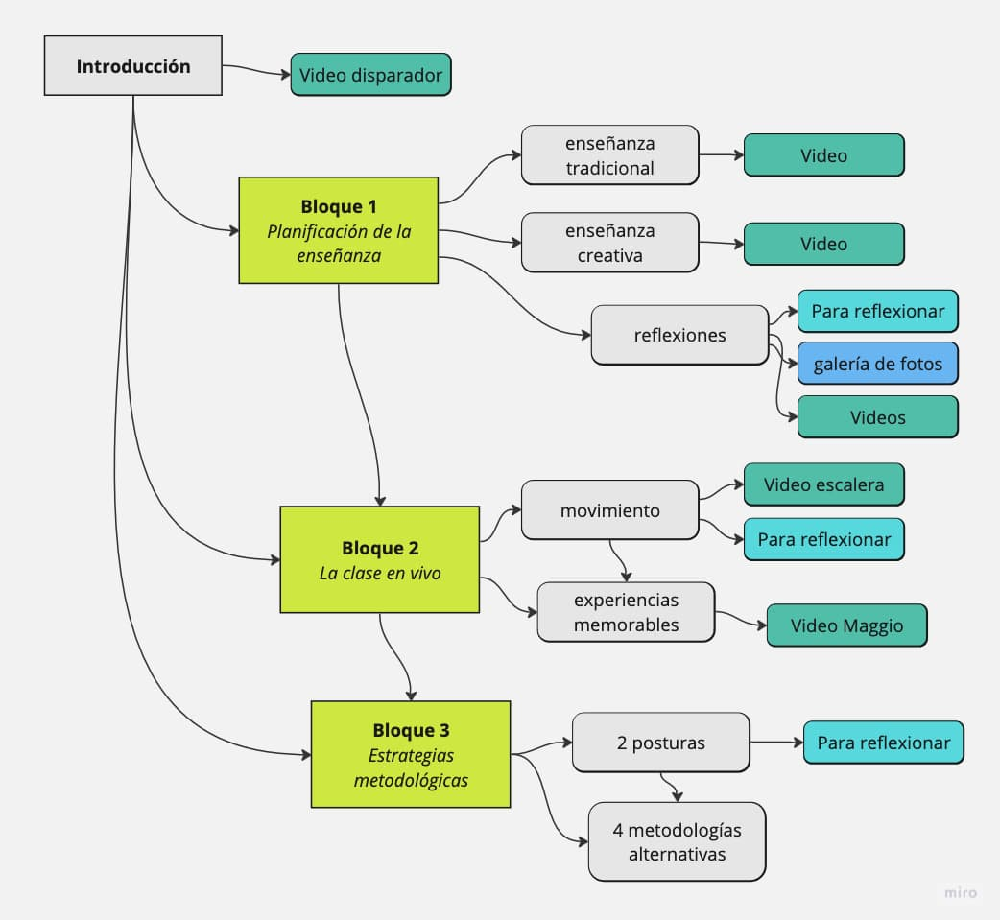
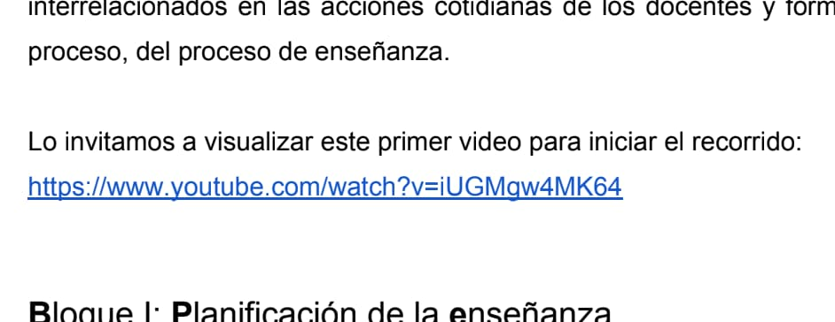
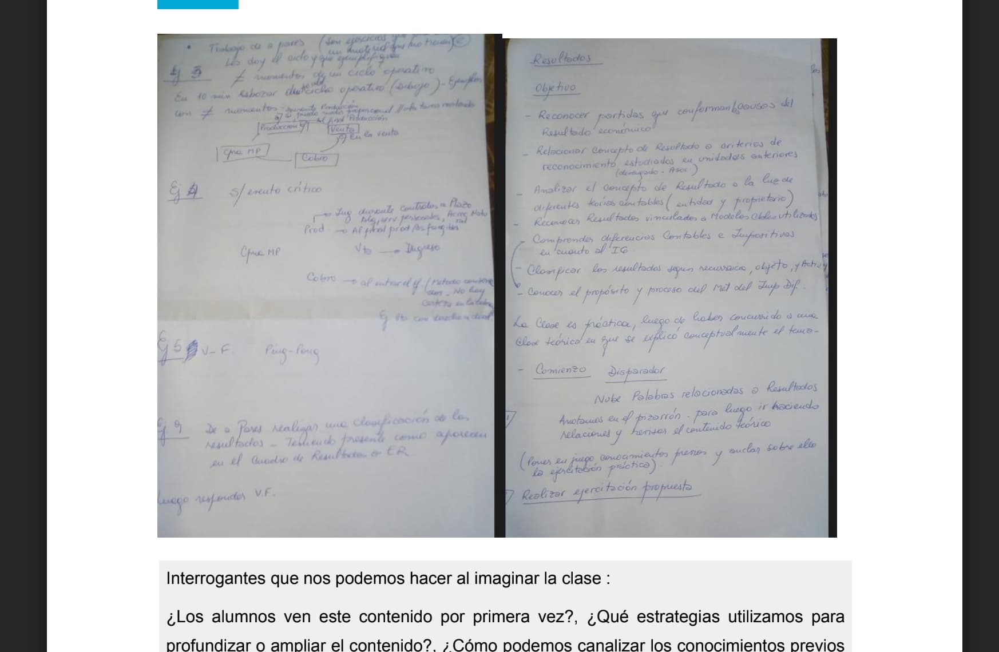

🚀 Mini-guia para la producción de materiales educativos hipermediales
Taller de metodologia
¿Cómo fue desarrollado?
Compartimos el proceso de trabajo dividido en las cinco etapas propuestas en esta guía.
🎯 1. Definir el contenido y los objetivos
Durante el proceso de producción del material no contábamos con la sistematización que estás leyendo actualmente, por lo que las preguntas y respuestas que verás a continuación son una reconstrucción aproximada a partir de las notas de las reuniones y documentos que fuimos trabajando:
¿Qué tema queremos trabajar? (¿qué?)
Todos los contenidos del taller “Estrategias metodológicas de la enseñanza”
¿Cuáles son los objetivos de aprendizaje que buscamos propiciar con el material? (¿para qué?)
El taller pretende generar un espacio de reflexión sobre las propuestas de enseñanza y las diversas alternativas que se proponen en el aula, en pos de generar el aprendizaje de los estudiantes. El objetivo es abrir el horizonte a nuevas posibilidades metodológicas, dando lugar a la innovación. Está dirigido a docentes de la Facultad de Ciencias Económicas de la UNC como una formación complementaria para el ejercicio de tareas docentes, por lo tanto, su cursado es opcional.
¿Por qué queremos producir un material hipermedial? (¿por qué?)
Se busca producir un material compatible con el aula virtual, que facilite el cursado del taller de forma autoasistida, es decir, que permita algunas evaluaciones y sea compatible con el aula virtual.
¿Con qué materiales contamos?
Se cuenta con un PDF de 20 páginas con todo el material del taller.
¿Cuánto tiempo tenemos para producir?
Seis meses (repartiendo este proyecto con otras tareas de FyPE, claro).
¿Cuál será el alcance del material? ¿Queremos que sea independiente de otros materiales?, ¿que se siga enriqueciendo en otras plataformas?, ¿que sólo sea parte de una parte de una unidad?
Se espera que pueda ser compartido por fuera del aula virtual, pero debe ser susceptible de ser incluído e incidir en las calificaciones dentro de un entorno moodle.
¿Qué tipo de experiencia buscamos que aporte lo hipermedial en este caso?
Buscamos facilitar la visualización de los contenidos audiovisuales linkeados en el PDF, agregar actividades interactivas, sostener la navegación lineal pero permitir también una navegación más clara por las unidades/bloques del taller.
¿Cómo reforzaremos el aprendizaje dentro del material? Se refiere a la acción esperada: ¿qué queremos que el estudiante realice?
Esperamos que el material presente los contenidos de formas más claras, segmentadas, ilustradas e interactivas, con pequeñas actividades de autoevaluación.
🗺 2. Diseñar la arquitectura de la información
Partimos de un material en formato PDF de 20 páginas que contiene la totalidad de los contenidos del taller. Está dividido en:
- introducción,
- tres bloques de contenido y
- una actividad práctica.

Consideramos que el material está claramente estructurado, y acompaña de manera orgánica la estructura del taller presencial (tres clases y una actividad), por lo que no proponemos un cambio en su arquitectura básica.
A partir de allí, fuimos clasificando los contenidos y bocetando mejor un mapa del material a producir:

🖖 3. Modelar la interacción
Revisando los contenidos en profundidad vimos que el índice del material:
no tenía enlaces internos que permitieran saltar rápidamente a los distintos capítulos del documento,
que presentaba varios enlaces a videos de youtube,

y presentaba una serie de fotografías de apuntes que no alcanzaban a leerse.

A partir de aquí, la primera decisión fue procurar que el usuario pudiera saltar de un punto a otro del material con facilidad y tener una experiencia completa de los contenidos sin la necesidad de abandonar el material. Es decir, el material debía permitir ver todos los videos y fotos en el mismo lugar y de la mejor manera posible, y debía facilitar un menú siempre visible para navegar rápidamente a las distintas secciones y subsecciones.
Se pensó sumar también algunos ejercicios simples (multiple choice, verdaderos y falsos) al finalizar cada sección como pequeñas autoevaluaciones. Este punto se dejó para una futura edición.
A partir de lo comentado, elegimos trabajar con la herramienta eXelearning. Este editor cumplía todos los requisitos aquí mencionados y además nos permitía exportar para utilizar en entornos virtuales de enseñanza (como paquete SCORM) y, sin mayor esfuerzo, como una página web autónoma (en formato HTML) con la idea (ya mencionada en los objetivos) de que material pudiese estar disponible de manera abierta por fuera del aula virtual y sin disminuir la calidad de la experiencia.
🎨 4. Diseñar la presentación
Para el diseño del material nos propusimos generar una interfaz luminosa con mucho aire, que de la sensación de calma y creatividad (situación ideal para responder a las consignas que se presentan en el material). Nos propusimos también acompañar con imágenes en tonos pasteles. En primer momento trabajando la idea de un taller de arte (asemejando la planificación de una clase con la producción de una obra de arte).
Se propuso a su vez una versión imprimible con espacio para apuntes, y que cuenta con la Ficha de la actividad final con los espacios debidamente consignados. Referencia: cuadernillo de Las Olas, el Gato y la Caja (2022).
El objetivo es diseñar un espacio de “retiro espiritual virtual”, una interfaz que transmita calma, propicie la reflexión, la creatividad y genere el deseo de regresar (o tener el material a mano) para inspirarse en la preparación de las clases. Pero esta interfaz requería un proceso creativo bastante largo y complejo, y entendimos que debía ser un material que pudiera ser replicable en otras instancias académicas.
🧪 5. Probar y corregir
Para esta etapa se diseñó un testeo del material que consistía en registrar la experiencia de tres personas navegando por el material libremente, luego solicitándoles realizar tres o cuatro tareas específicas (relacionadas a los objetivos del material) y luego entrevistarles con algunas preguntas específicas y dando lugar a sus comentarios.
Le hicieron tres entrevistas, una por persona con distintos perfiles: docente, profesional de la educación y estudiante.
La modalidad fue por videoconferencia, lo que facilitó ver y grabar la pantalla de cada usuario.
En este caso detectamos que:
[x] Los nombres de bloques en el menú diferían a los mostrados en la página 1 (corregido)
[x] No se hacía evidente que las imágenes del inicio tenían enlaces (corregido)
[x] Las citas en la sección “El vivo la clase vivida” podían mostrarse mejor (corregido)
[x] La imagen del capítulo final se ve demasiado grande (corregido)
[ ] El cierre queda un poco seco, sería mejor agregar una pequeña síntesis que retome lo abordado.
También se recibieron comentarios positivos que destacaron:
“es un formato interesante para materias largas” “es muy clara y simple la navegación” “está bueno para el desarrollo de bolillas, o presentar síntesis y temas principales” “está buena la caja de búsqueda”
Por lo comentado, pudimos hacer una rápida corrección de algunos puntos importantes y valoramos que el material ya está en condiciones para ser usado.
🧰 Herramienta utilizada
eXeLearning es un programa libre y de código abierto para crear contenidos educativos. En un mismo material podemos combinar texto, imágenes, recursos embebidos y actividades varias. El programa cuenta con diferentes diseños -plantillas- que se pueden elegir desde el menú e incluso permite modificarlas o crear diseños propios.
El editor funciona desde el navegador, por lo que puede usarse en todos los sistemas operativos.
Una vez finalizado el recurso podemos exportarlo en diferentes formatos:
- Como un archivo para subir a plataformas educativas (Moodle y otros LMS).
- Como sitio web navegable y adaptable a diferentes dispositivos (esta guía está construída con esta modalidad).
- Como página HTML única (útil para imprimir).
- Como ePub3 (es decir como ebook / libro electrónico), para leer cómodamente desde dispositivos móviles sin conexión.
- Descargar exelearning https://exelearning.net/descargas/
Manual de uso: https://exelearning.net/ayuda/
Ejemplo: https://descargas.intef.es/cedec/exe_learning/Manuales/manual_exe28/
Obra publicada con Licencia Creative Commons Reconocimiento Compartir igual 4.0